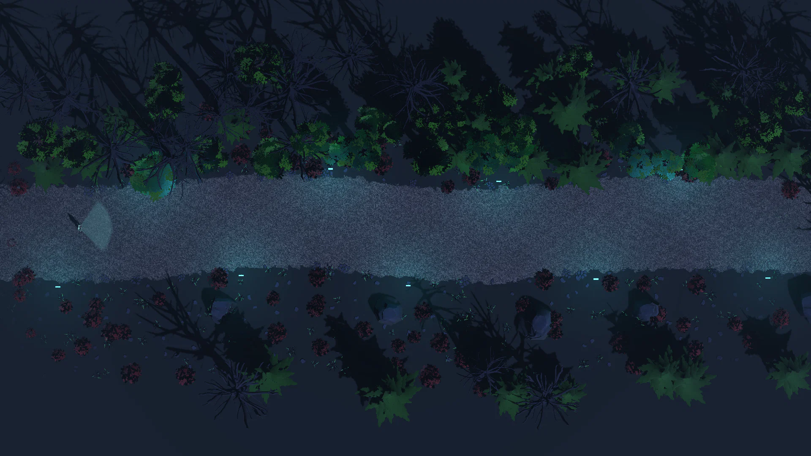
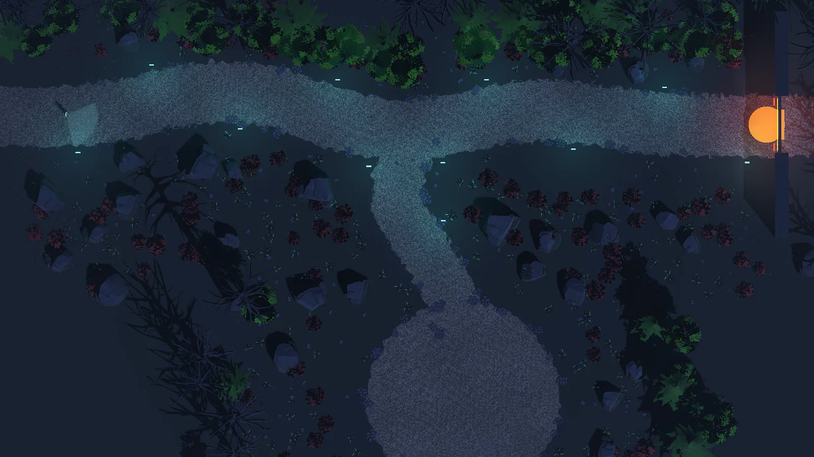
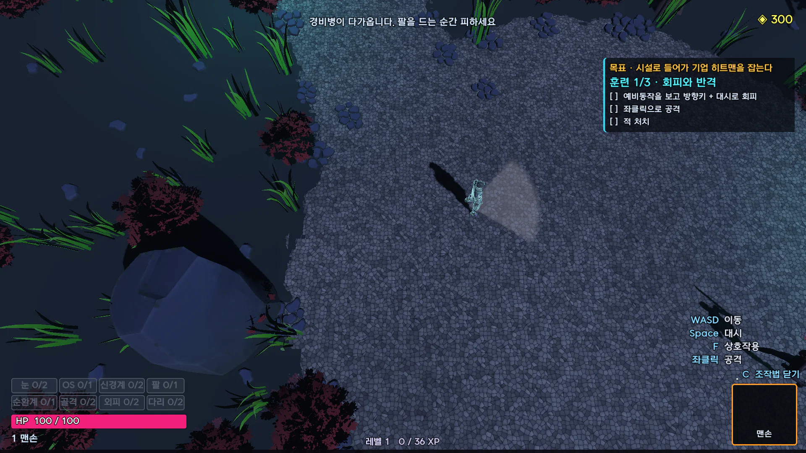
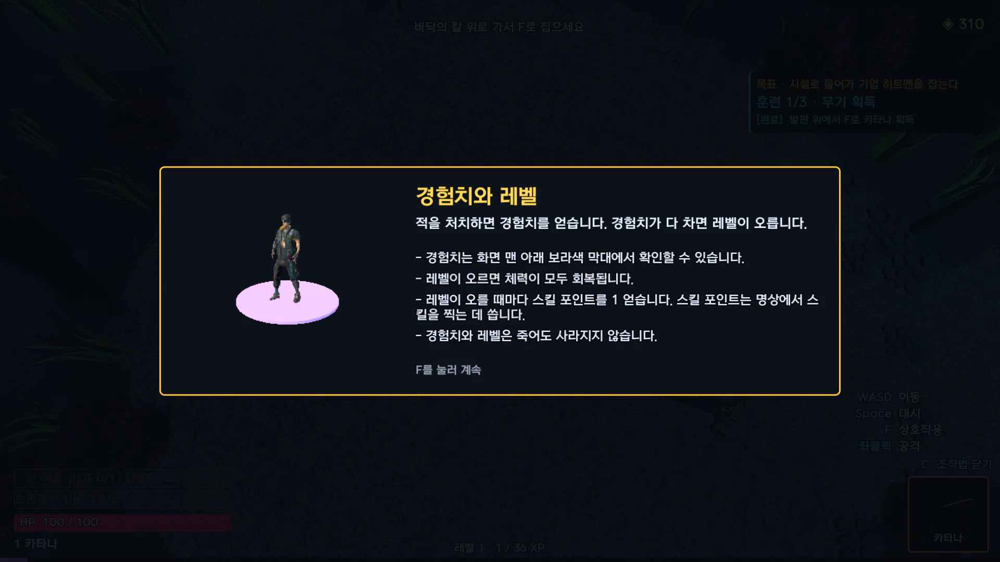
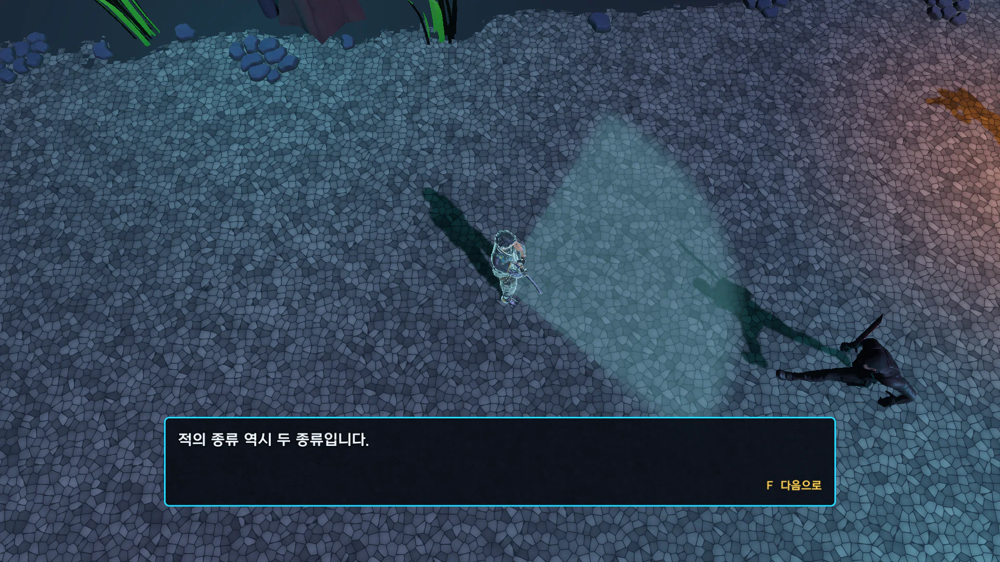
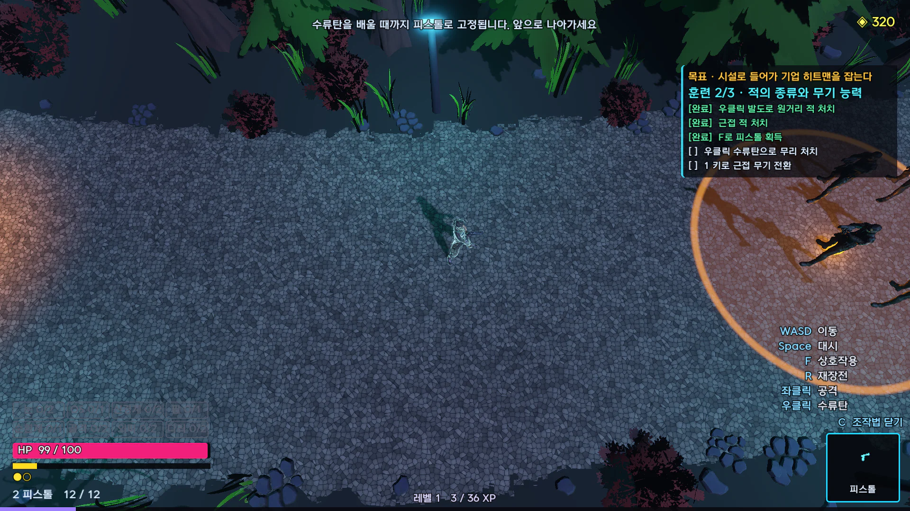
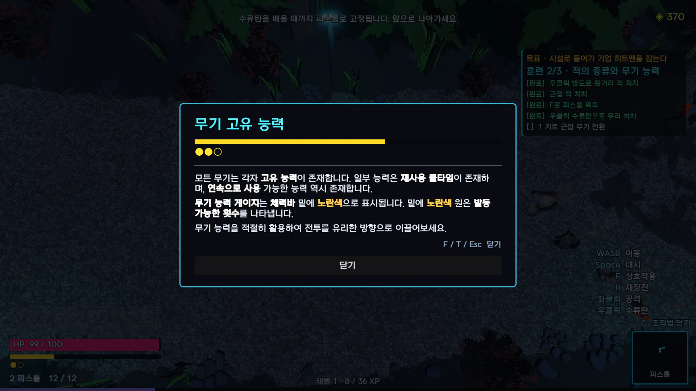
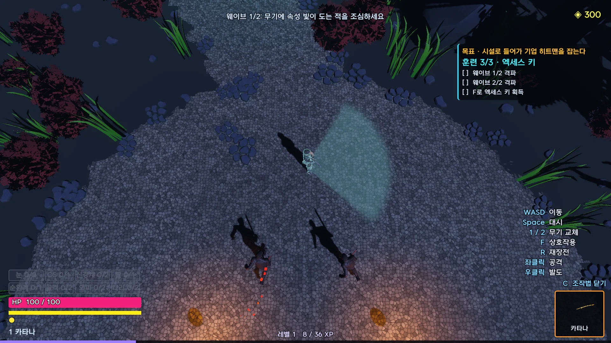
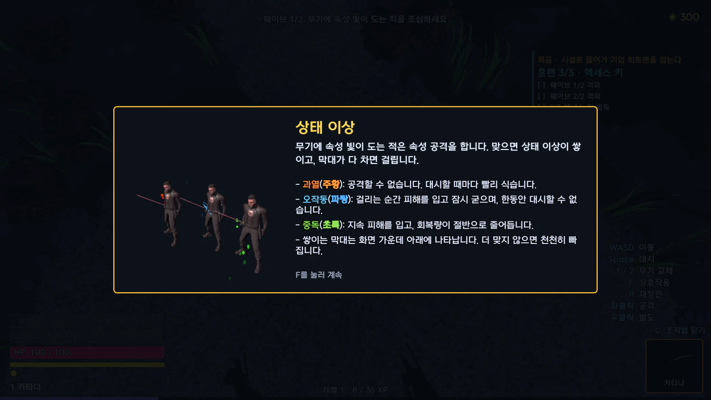
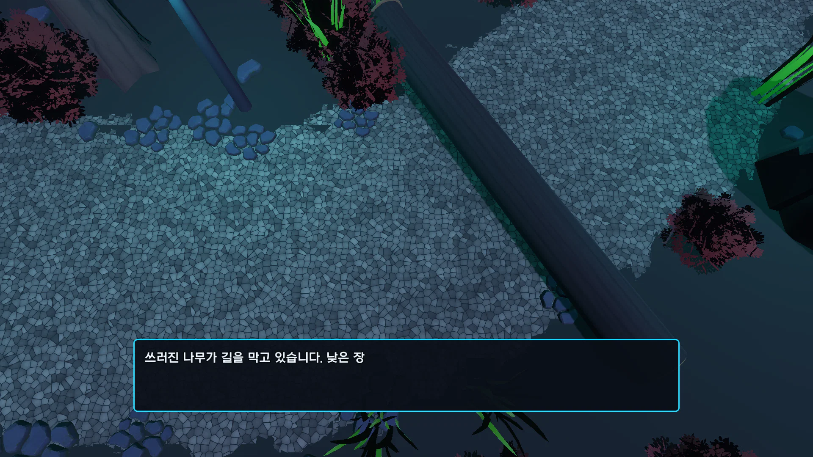

Edgerunners 기획서
튜토리얼 기획서
첫 판에만 나오는 숲속 맵 3개와 시간을 멈추는 코칭 컷, 수행 조건에 따른 단계 진행을 다룹니다.
01
튜토리얼의 교습 방식과 맵 세 개의 구성

튜토리얼 기획서
EDGE
RUNNERS
조작에 적응하고 기본 시스템을 익히도록 마련한 최소한의 장치입니다.
첫 판에만 진행하는 숲속 맵 세 개로 구성했습니다.
장대규
1인 개발, Godot 4.7.2, 2026.08.21 – 10.21
01
플레이어가 게임 조작에 적응하고 기본 시스템을 숙지할 수 있도록 마련한 최소한의 장치입니다.
자세히 보기
튜토리얼을 만든 이유
차근차근 따라오게목표와 기본 조작을 알려 주는 연출 컷으로 한 번에 하나씩 안내
무기 능력과 전략우클릭 능력의 활용, 가까운 적은 근접 무기로 처치하는 것이 유리하다는 전략 설명
진행의 당위성노리는 대상(기업 히트맨)과, 시설에서 적의 방해를 뚫고 보스에게 가는 이유 제시
한 판에서의 위치
- 튜토리얼새 게임의 첫 판만, 숲속 맵 세 개(1~3단계)
- 시설 입장방무기 해금, 작업대, 명상
- 방 12개문에 적힌 보상을 보고 선택
- 보스기업 히트맨
목표 표시
- 화면 오른쪽 위에 "시설로 들어가 기업 히트맨을 잡는다"를 세 단계 내내 표시합니다.
- 목표 아래에 단계 이름과 할 일 목록을 표시합니다.
- 완료한 항목에는 완료 표시가 붙습니다.
단계별로 배우는 것
1단계 · 조작 연습이동, 대시, 회피, 근접 공격, 레벨
2단계 · 무기 활용 연습적의 종류, 우클릭 능력, 무기 전환
3단계 · 스스로 복습웨이브 전투, 상태 이상, 길 찾기
01 코칭 컷
시간 정지 후 한 번에 한 가지씩 교습
2
카메라 줌인
카메라 각도는 유지하고 거리만 좁힙니다.
3
자막 한 줄에 한 가지 설명
설명 대상을 화면 가운데에 둡니다.
4
배울 키 하나만 입력
배울 키를 입력하면 시간이 다시 흐릅니다.
성공 시 카메라가 원래 거리로 복귀합니다.
글로만 “대시로 피하세요”를 띄우면 플레이어가 읽는 동안 공격에 맞습니다.
이 경우 플레이어는 조작법 대신 ‘튜토리얼 문구는 읽을 틈이 없음’을 학습합니다.
EDGERUNNERS 튜토리얼 기획서
02
02
코칭 컷은 공격을 맞기 전에 설명을 읽을 시간을 줍니다. 코칭 컷 동안 배울 키 하나만 입력받습니다.
자세히 보기
진행 순서
- 적 접근공격 직전에 게임 정지
- 카메라 줌인각도는 그대로
- 자막한 줄에 한 가지
- 키 입력배울 키만 입력
- 다시 진행성공 시 카메라 복귀
입력 차단 방식
- 코칭 컷 동안 게임 전체를 멈춥니다.
- 막을 키를 하나씩 지정하지 않으므로 가르치지 않은 키는 입력되지 않습니다.
- 자막은 F로 넘깁니다. 마지막 줄에서 배울 키를 입력받습니다.
카메라
- 실제 전투와 같은 피치 -72°를 유지하고 거리만 줄입니다.
- 튜토리얼 화면과 전투 화면이 다르면 튜토리얼에서 익힌 감각이 다음 전투에서 맞지 않습니다.
- 자막 줄이 바뀌면 카메라가 비추는 대상도 바뀝니다.
코칭 컷 미사용 구간
- 한 번 배운 조작은 다음부터 플레이어가 스스로 수행합니다.
- 해당 구간은 1단계의 나머지 나무 둘과 2단계의 남은 근접 적입니다.
- 3단계에는 코칭 컷이 없습니다.
02 맵 구성
숲속 맵 세 개로 구성한 튜토리얼
조작 연습, 무기 활용 연습, 스스로 복습의 세 단계를 거쳐 본 게임으로 들어갑니다.
1단계 조작 연습
길을 막은 쓰러진 나무를 대시로 넘습니다.
공터에서 근접 적 하나와 싸웁니다.

2단계 무기 활용 연습
우클릭 발도와 피스톨 수류탄을 처음 사용합니다.
가까운 적은 근접 무기로 처치합니다.

3단계 스스로 복습
코칭 없이 배운 것으로 두 웨이브를 처치합니다.
정문을 여는 키를 직접 찾습니다.
세 단계 공통 목표
시설로 들어가 기업 히트맨을 잡는다
EDGERUNNERS 튜토리얼 기획서
03
03
1~3단계는 서로 다른 숲속 맵입니다. 앞 단계에서 얻은 무기를 다음 단계에서 그대로 사용합니다.
자세히 보기
단계별 맵 구성
| 단계 | 맵 구성 | 끝나는 조건 |
|---|
| 1단계 | 쓰러진 나무 셋이 가로막은 약 75m의 숲길, 길 끝의 둥근 공터 | 공터에서 카타나 획득 시 다음 문 개방 |
| 2단계 | 곧게 뻗은 숲길 하나 | 1로 무기 전환 시 다음 문 개방 |
| 3단계 | 길 끝의 잠긴 시설 정문, 길 중간에서 아래로 갈라져 키가 있는 공터로 가는 샛길 | 키 획득 후 정문으로 진입 |
손에 든 무기
- 1단계맨손으로 시작해 카타나 획득
- 2단계카타나로 시작해 피스톨 획득
- 3단계카타나와 피스톨을 1/2로 전환
공통 규칙
- 새 기능은 그 기능을 쓰는 단계에서 처음 해금합니다.
- 보행 가능 구역의 경계에 나무, 덤불, 바위를 세웁니다.
- 튜토리얼 종료 후 바로 시설 입장방으로 이어집니다.
02
단계별로 가르치는 것
03 1단계
맨손 대시 · 회피 학습과 카타나 획득
1
쓰러진 나무 대시 통과
나무 양 끝이 숲에 막혀 대시로만 통과 가능합니다.
코칭 컷은 첫 나무 앞에만 있습니다. 나머지 둘은 스스로 넘습니다.
2
공터 근접 적 하나와 맨손 전투
적 접근 시와 팔을 다 들어 올린 순간에 멈추고 예비동작을 보여 줍니다.
휘두르기 직전에 한 번 더 멈추고 방향키와 Space를 입력받습니다.
3
공터 한가운데 좌대에서 카타나 획득
무기를 쥐여 준 뒤 설명하면 플레이어가 설명을 읽기 전에 먼저 사용합니다.
따라서 카타나를 좌대에 두고 F로 줍게 합니다.
4
레벨 설명창 표시
첫 처치로 경험치를 얻은 직후에 경험치와 레벨을 설명합니다.


EDGERUNNERS 튜토리얼 기획서
04
04
1단계는 무기 없이 이동과 회피를 익히는 구간입니다. 마지막에 카타나와 레벨을 소개합니다.
자세히 보기
진행 순서
- 이동WASD
- 대시쓰러진 나무 셋
- 회피와 공격공터의 근접 적 하나
- 카타나좌대에서 F
- 레벨경험치와 레벨 설명창
쓰러진 나무
- 나무 자리는 보행 폭이 자갈길 폭으로 좁아집니다.
- 첫 나무의 코칭 컷에서 Space 입력 시 게임이 대시 방향을 길 쪽으로 보정합니다.
- 넘은 나무 수는 목표 목록에 (n/3)으로 표시됩니다.
회피 코칭
예비동작을 가르치는 이유
- 눈 사이버웨어가 없으면 주황 공격 범위가 보이지 않습니다.
- 따라서 첫 판에서는 적이 팔을 드는 예비동작이 유일한 공격 예고입니다.
두 번 나눠 멈추는 이유
- 한 번에 설명하면 ‘팔을 들면 바로 Space’로 받아들여집니다.
- 나눠 멈추면 기다렸다가 피하는 타이밍을 익힐 수 있습니다.
레벨 설명
1일반 적 처치 경험치
36레벨 2까지 필요한 경험치
- 다음 레벨까지 필요한 경험치는 30 + 6×레벨입니다.
- 레벨업 시 체력을 전부 회복하고 스킬 포인트 1을 얻습니다.
- 경험치는 화면 맨 아래 보라색 막대로 표시됩니다. 사망 시에도 유지됩니다.
04 2단계
근접 · 원거리 적 동시 등장 시점의 우클릭 해금
1
두 적 동시 등장
입구에서 10m 통과 시 근접 적과 원거리 적이 함께 등장합니다.
원거리 적은 근접 적 뒤, 발도가 닿는 거리에 배치합니다.
2
적 종류 설명
두 적이 나타난 동안 이동을 막고 근접 적과 원거리 적을 한 줄씩 설명합니다.
줄마다 설명 대상인 적을 화면 가운데에 둡니다.
3
우클릭 발도로 원거리 적 처치
1단계에서 잠긴 우클릭을 2단계에서 해금합니다. 첫 발도는 방향을 보정합니다.
각 기능은 실제로 쓰는 단계에서 해금합니다.
기획 의도
원거리 적을 근접 적 뒤에 배치하여, 거리를 좁히며 베는 발도의 사용 이유를 만듭니다.


EDGERUNNERS 튜토리얼 기획서
05
05
2단계 앞부분은 적의 종류를 구분하게 합니다. 원거리 적을 먼저 처치하는 방법으로 발도를 교습합니다.
자세히 보기
진행 순서
- 두 적 등장입구에서 10m
- 적의 종류 코칭한 줄에 한 종류
- 우클릭 해금첫 발도는 방향 보정
- 남은 근접 적스스로 처치
- 피스톨 좌대다음 구간 시작
발도 수치
- 튜토리얼의 원거리 적을 한 번에 처치하도록 맞춘 수치입니다.
- 발도는 적을 관통해 지나가며 벱니다.
- 횟수와 재사용 시간을 자원으로 사용합니다.
우클릭 2단계 해금 이유
- 1단계에서 카타나를 얻어도 우클릭은 잠긴 상태입니다.
- 게이지 없는 키로 먼저 익숙해지면 게이지 설명이 뒤늦은 설명이 됩니다.
- 따라서 발도로 우클릭을 처음 해금합니다. 게이지 설명은 수류탄까지 써 본 뒤에 합니다.
무기 고유 능력
- 좌클릭 기본 공격은 무기 간 차이가 작습니다.
- 무기의 개성은 우클릭 능력에서 나옵니다.
- 따라서 튜토리얼에서 두 기본 무기의 우클릭을 모두 사용하게 합니다.
05 2단계
수류탄으로만 처치되는 적을 이용한 수류탄 교습

수류탄 한 발로 다섯 처치

마지막 단계의 무기 능력 설명창
공략법이 하나뿐인 적 무리
피스톨 획득 후에는 1을 눌러도 무기가 바뀌지 않습니다.
원거리 적 다섯은 수류탄으로만 처치되며 제자리에서만 공격합니다.
게이지 · 횟수 설명창은 발도와 수류탄을 모두 써 본 뒤 표시됩니다.
기획 의도
공략법을 수류탄 하나로 한정하여, 첫 수류탄으로 무리 전체를 처치하는 경험을 제공합니다.
EDGERUNNERS 튜토리얼 기획서
06
06
2단계 뒷부분은 피스톨의 수류탄을 교습합니다. 무기 능력 게이지 설명 후 무기 전환으로 마무리합니다.
자세히 보기
진행 순서
- 피스톨 획득무기가 피스톨로 고정
- 원거리 적 다섯한곳에 모여 등장
- 수류탄 코칭무리 10.5m 앞
- 수류탄다섯을 한 번에 처치
- 무기 능력 설명창게이지와 횟수
- 무기 전환1로 카타나
무리의 규칙
- 총알로는 피해를 입지 않습니다. 수류탄으로만 처치됩니다.
- 다가오지 않고 제자리에서만 공격합니다.
- 첫 수류탄은 게임이 무리 한가운데로 던집니다.
무기 능력 표시
- 체력바 아래 노란 막대는 충전, 점은 남은 횟수를 나타냅니다.
- 화면에는 글자 없이 막대와 점만 표시합니다.
- 따라서 막대와 점의 뜻은 설명창에서 한 번 설명합니다.
06 3단계
코칭 컷 없이 스스로 길을 찾는 마지막 단계

샛길 끝 공터의 웨이브 1

웨이브 1 시작 시 상태 이상 설명창
샛길 방향 안내 없음
위쪽 길 끝 시설 정문은 잠겨 있습니다. 안내는 “엑세스 키를 찾으시오” 하나뿐입니다.
샛길 끝 공터에서 근접 2, 원거리 2 처치 시 근접 3, 원거리 3이 등장합니다.
모두 처치하면 공터 한가운데에 키가 나옵니다. 키를 얻으면 정문이 열립니다.
기획 의도
앞 단계에서 배운 조작을 코칭 없이 사용하고, 길도 스스로 찾게 합니다.
EDGERUNNERS 튜토리얼 기획서
07
07
3단계는 앞에서 배운 조작을 코칭 없이 쓰는 구간입니다. 새로 배우는 것은 상태 이상 하나입니다.
자세히 보기
진행 순서
- 시설 정문잠김
- 샛길위쪽 길 중간에서 아래로
- 웨이브 1근접 2, 원거리 2, 속성 적 둘
- 웨이브 2근접 3, 원거리 3, 속성 적 셋
- 키공터 한가운데
- 시설 입장방정문을 지나 바로
상태 이상
| 상태 이상 | 효과 | 지속 |
|---|
| 과열 (주황) | 공격 불가, 대시할 때마다 지속 시간 20% 감소 | 7초 |
| 오작동 (파랑) | 대시 불가, 걸리는 순간 0.7초 경직 | 2.5초 |
| 중독 (초록) | 회복량 절반 | 8초 |
- 속성 공격에 맞으면 누적치가 쌓입니다. 누적치가 문턱 45를 넘으면 상태 이상에 걸립니다.
길 안내
- 정문 앞에서 샛길 방향 안내를 하지 않습니다.
- 아래로 갈라지는 샛길에도 자갈을 깔아 갈 곳을 지형으로 표시합니다.
03
지형 안내와 단계별 정리
숲 바닥 (보행 가능)
자갈길 (가야 할 길)
쓰러진 나무 자리
점선: 보이지 않는 벽

자갈길로 경로 표시
가야 할 길에만 자갈을 배치합니다.
길이 꺾이는 곳은 안쪽을 숲으로 막아 가로지르기를 차단합니다.
자갈길보다 넓은 보행 범위
자갈 끝에서 숲 바닥으로 몇 m 더 이동 가능합니다.
보이지 않는 벽이 길 바로 옆에서 동선을 강제하지 않게 하기 위해서입니다.
막힌 곳의 시각적 표시
경계에 나무, 덤불, 바위를 촘촘히 배치합니다.
카메라 쪽(화면 아래)에는 큰 나무를 두지 않아 화면 가림을 방지합니다.
EDGERUNNERS 튜토리얼 기획서
08
08
튜토리얼 맵은 자갈로 갈 길을 표시합니다. 실제 보행 범위는 보이는 경계에 맞춰 자갈길보다 넓게 둡니다.
자세히 보기
길의 단면
쓰러진 나무 자리
- 보행 폭이 자갈길 폭으로 좁아집니다.
- 나무 양 끝은 숲에 막혀 옆으로 돌아갈 수 없습니다.
- 따라서 대시 외의 통과 방법이 없습니다.
화면 가림 방지
- 카메라는 피치 -72°로 위에서 내려다보며 플레이어를 따라갑니다.
- 화면 아래쪽의 큰 나무는 플레이어를 가립니다. 따라서 화면 아래쪽에는 덤불과 풀만 둡니다.
08 단계별 정리
배운 조작의 수행을 조건으로 한 단계 진행
단계
주제
코칭 컷 위치
다음 단계 진행 조건
1단계
대시와 회피
쓰러진 나무, 맨손 전투, 카타나, 레벨
첫 나무 앞 (Space)
적 접근 시, 팔을 들 때
휘두르기 직전 (Space)
나무 셋 대시 통과, 근접 적 처치, 카타나 획득
2단계
무기 고유 능력
적의 종류, 발도, 수류탄, 무기 전환
두 적 등장 순간 (우클릭)
원거리 적 다섯 앞 (우클릭)
무기 고정 해제 시 (1)
발도로 원거리 적 처치, 수류탄으로 원거리 적 다섯 처치, 1로 무기 전환
3단계
없음 (스스로 찾음)
두 웨이브 처치, 키 획득, 잠긴 정문 개방
쓰러진 나무는 대시로만 통과 가능합니다. 원거리 적 다섯은 수류탄으로만 처치됩니다.
따라서 다음 단계 진입은 배운 조작을 최소 1회 수행했음을 의미합니다.
EDGERUNNERS 튜토리얼 기획서
09
09
각 단계는 배운 조작을 실제로 수행해야 끝나도록 구성합니다.
자세히 보기
진행 조건으로 확인하는 조작
1단계대시로만 넘을 수 있는 나무
2단계수류탄으로만 처치되는 무리
3단계두 웨이브를 처치해야 나오는 키
첫 1회 방향 보정
- 첫 대시, 첫 발도, 첫 수류탄은 게임이 방향을 보정합니다.
- 첫 시도가 빗나가면 플레이어가 기술이 통하지 않는다고 잘못 학습합니다.
스스로 수행하는 구간
- 1단계의 나머지 나무 둘
- 2단계의 남은 근접 적
- 3단계 전체
목표 목록
- 단계별 할 일을 화면 오른쪽 위 목록에 표시합니다.
- 완료한 항목에는 완료 표시가 붙습니다.